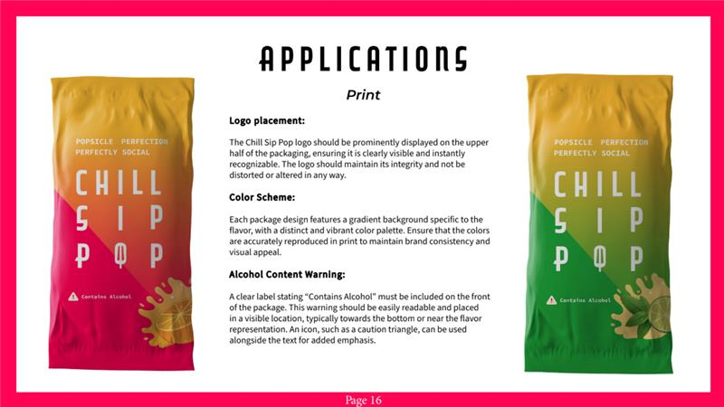
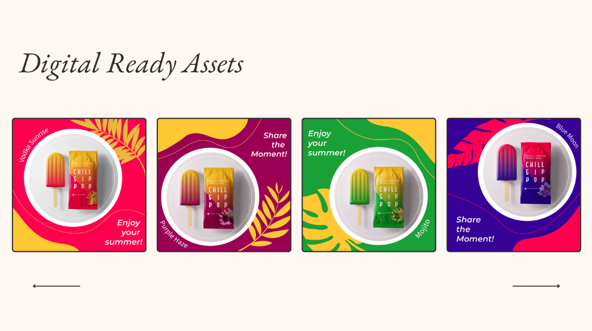
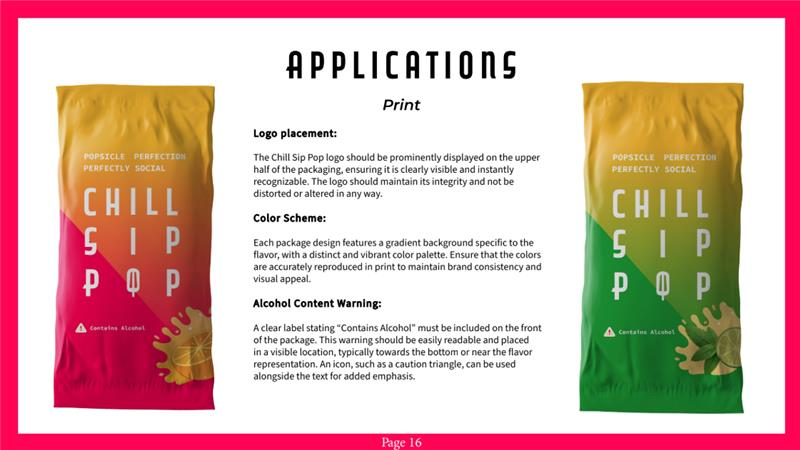
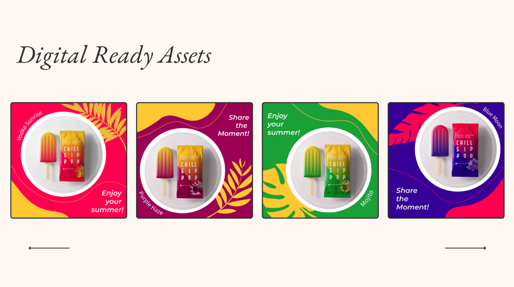

Chill Sip Pop
Branding & packaging design, Logo creation, Adobe Illustrator & Photoshop, Market positioning & audience targeting
Introduction
Chill Sip Pop is a fictional cocktail popsicle brand created for a class project. We were tasked with building a brand identity and packaging system based on the name and brief provided by our instructor. Inspired by the fun, social, and summery vibe of cocktails, we used colorful vintage-style gradients and fruit icons to highlight flavor and appeal to a young, outgoing audience. The result is a playful yet modern design that balances clarity and personality.
Research & Data
We studied packaging trends, color psychology, and consumer behavior to guide our choices. Key insights included the importance of instant flavor recognition and using vibrant, energetic visuals to stand out in retail spaces. Our target demographic was 25–40-year-olds with active social lifestyles.
 


